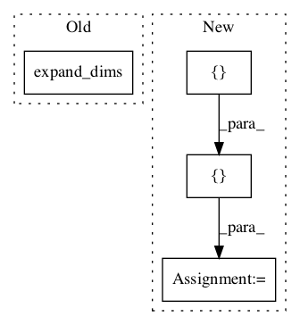

0bdbdc76049e86654dcb5f0ee134c98dd93d514c,layers/eight_mile/tf/layers.py,,unfold_tensor,#Any#Any#Any#,2248

Before Change
ksizes[dim] = window_sz
ksizes = ksizes + [1]
strides = [1] * (len(tensor.shape) + 1)
return tf.extract_volume_patches(tf.expand_dims(tensor, -1), ksizes=ksizes, strides=strides, padding="SAME")
class SeqScaledWindowedRelativeAttention(SequenceSequenceRelativeAttention):
After Change
half_window = (window_sz - 1) // 2
if dim < 0:
dim = len(tensor.shape) + dim
paddings = [[0, 0]] * len(tensor.shape)
paddings[dim] = [half_window, half_window]
padded = tf.pad(tensor, paddings)
return tf.signal.frame(padded, frame_length=window_sz, frame_step=1, axis=dim)
class SeqScaledWindowedRelativeAttention(SequenceSequenceRelativeAttention):
In pattern: SUPERPATTERN
Frequency: 3
Non-data size: 4
Instances
Project Name: dpressel/mead-baseline
Commit Name: 0bdbdc76049e86654dcb5f0ee134c98dd93d514c
Time:
Author: null
File Name: layers/eight_mile/tf/layers.py
Class Name:
Method Name: unfold_tensor
Project Name: broadinstitute/keras-rcnn
Commit Name: 3c397401a06de998cd99a6da2e97d4daecb44c9c
Time:
Author: null
File Name: keras_rcnn/backend/common.py
Class Name:
Method Name: bbox_transform_inv
Project Name: broadinstitute/keras-rcnn
Commit Name: 3c397401a06de998cd99a6da2e97d4daecb44c9c
Time:
Author: null
File Name: keras_rcnn/backend/common.py
Class Name:
Method Name: clip